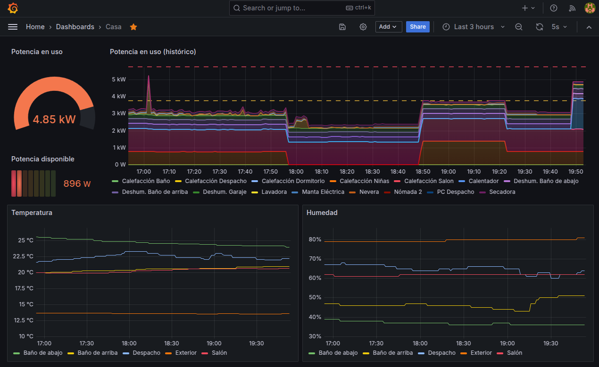

Continuous Monitoring for TP-Link Tapo devices
In an old house with aging electrical wiring and a limited power contract, keeping power consumption in check is quite necessary and can be a bit of a challenge. Some appliances are very power-hungry for short periods of time, at unpredictable times throughout the day, while others are running constantly and add up to a baseline that quietly takes a chunk of the power budget.
A decent way to keep an eye on power consumption is offered by the TP-Link Tapo line of products, in particular their smart plugs with energy monitoring and temperature and humidity sensors. These devices are relatively easy to setup, reliable, discrete and not too expensive... although they do add up fast!
For all the smart features in these devices and the companion app, there is no way to have a panoramic view of aggregated power consumption broken down by device, or to configure thresholds based on the aggregated power consumption from all appliances. Such panoramic view was not hard to implement by building on the Continuous Monitoring solution previously built for monigoring computing resources (already monitoring temperatures and power consumption).
